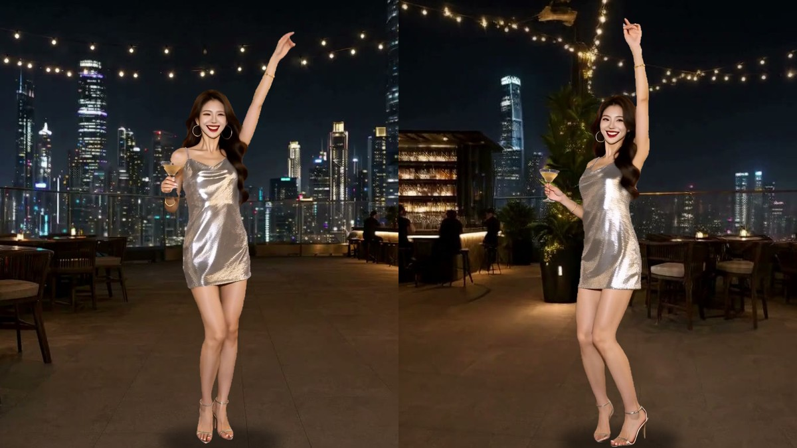

打开 demoOpen demo天台起舞：她一直在跳，拖着转整个天台Rooftop Dance — spin the scene while she keeps dancing
接着《朋友圈》第 4 格：苏曼在天台派对上一直在跳舞，拖动画面，整个天台绕着她转。背景和人分开生成——空天台用 MiniMax-H3 + ORB360 LoRA 绕一圈，跳舞用 H3 首尾帧出一段能无缝循环的 5 秒视频，再用 SAM 3.1 抠出来叠在中间，音乐也是 H3 一起生成的。
A follow-up to panel 4 of The Feed: she keeps dancing at the rooftop party while you drag to spin the whole rooftop around her. The background and the dancer are made separately — an empty-rooftop orbit from MiniMax-H3 + the ORB360 LoRA, and a seamlessly looping 5-second dance from H3 first/last-frame video, cut out with SAM 3.1 and layered in the middle. The music comes from H3 too.
Qwen Image 2.1MiniMax-H3 FL2V (8-step turbo)MiniMax-H3 Ref2VAORB360 LoRA (step 1500)SAM 3.1
要点Notes
- 两层分开，所以她永远正面朝你：拖动转的是背景，镜头不会绕到她背后。Two separate layers, so she always faces you: dragging spins the background, and the camera never goes around behind her.
- 让 ORB360 绕一块空地转：2 个种子里 1 个真的绕了一圈、首尾接得上；另一个把整个画面原地翻滚，城市都倒过来了。Asking ORB360 to orbit an empty spot: one of two seeds circled properly and looped cleanly; the other rolled the whole frame, skyline upside down.
- 人糊是因为太小：1024×768 里她的脸只有约 76 像素，一跳就糊成蜡像；整张图提到 1536×1152 后，同样的显示尺寸下脸部清晰度约是原来的 3 倍。The blur came from size: at 1024×768 her face was about 76 px and smeared as soon as she moved; at 1536×1152 the face is about 3× sharper at the same display size.
- 想裁成竖构图让她更大，结果 5 次全都推镜头（推近 1.09–1.6 倍），提示词写了不准推也没用；横构图 4 次都纹丝不动。Cropping to a tall portrait to make her bigger backfired: all 5 runs pushed in (1.09–1.6×), even with a no-zoom prompt; all 4 landscape runs held perfectly still.
- SAM 3.1 按 woman 抠人不带她手里的酒杯，要再按 cocktail glass 抠一次补上。SAM 3.1’s “woman” mask leaves out the cocktail glass in her hand; a second “cocktail glass” pass fills it in.